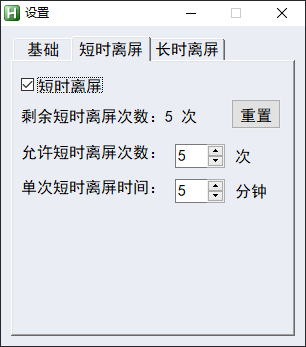
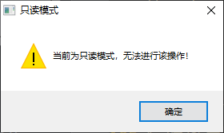
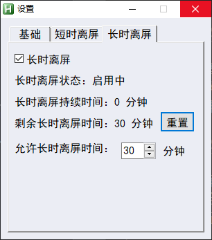
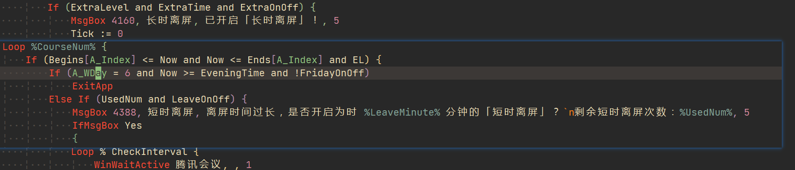
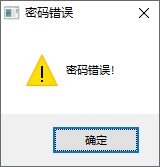

新鬼烦冤旧鬼哭
前言
这篇文章最初写于 2022 年 12 月 31 日。2023 年 9 月 24 日初次改写为博文。
语言比较随意，但一定程度上反映了我的思考。只进行了部分格式修正以适应博文格式，未进行内容的修改。
感叹，2023 已经过去了一大半了（9 月 24 日），我正在南京大学的宿舍敲下这前言。2023 的高三我有几次感冒，但终究是没有阳（也可能是阳而未检）。当时其实想了很多，但真正的思考只有寥寥几行。也许以后会增加内容吧，以新博文的形式。
前记
标题选自 杜甫《兵车行》。
《兵车行》
杜甫车辚辚，马萧萧，行人弓箭各在腰。
耶娘妻子走相送，尘埃不见咸阳桥。
牵衣顿足拦道哭，哭声直上干云霄。
道傍过者问行人，行人但云点行频。
或从十五北防河，便至四十西营田。
去时里正与裹头，归来头白还戍边。
边庭流血成海水，武皇开边意未已。
君不闻汉家山东二百州，千村万落生荆杞。
纵有健妇把锄犁，禾生陇亩无东西。
况复秦兵耐苦战，被驱不异犬与鸡。
长者虽有问，役夫敢申恨？
且如今年冬，未休关西卒。
县官急索租，租税从何出？
信知生男恶，反是生女好。
生女犹得嫁比邻，生男埋没随百草。
君不见，青海头，古来白骨无人收。
新鬼烦冤旧鬼哭，天阴雨湿声啾啾！
然而实际上本篇内容跟这首诗没有关系。
本篇内容主要跟新型冠状病毒疫情有关，由于当时还叫「新冠肺炎」，搜相关消息的拼音简写就是「xgfy」，而当时跳出的关键词就是这句「新鬼烦冤旧鬼哭」，给我留下了很深的影响，因此这篇内容就用这当时甚至不知道出处的一句诗命名。
本来本月中旬就有写本篇内容的想法，然而一直拖到了网课，本打算网课时就一定要写了，结果开摆了一周，文件都没创建。最终拖到了今天，就当作「疫情三年纪念」与「2023 献礼」吧。
时间线
2020 疫情滥觞
根据百科相关内容
中国首位前往医院就诊的患者于2019年12月8日发病、12月12日前往武汉市优抚医院就诊。2020年1月14日，黄朝林等人在《柳叶刀》期刊发布的论文指，在当时已有患者中最早出现症状的病例可以追溯至12月1日。
随即
2020年1月1日，中国疾病预防控制中心在武汉华南海鲜市场采得样本后，在1月7日发表检验结果，表示“不明原因的病毒性肺炎”病原体初步判定为新型冠状病毒。
当时我还是准备中考的初三学生，注意到这个消息，但并没如何重视。直到病例数目越来越多，并且 1 月 23 日，武汉封城时才真正意识到问题的严重性。当时人们担心新冠疫情会演变成像我没经历过的 03 年非典那样，不过目前看来，岂止如此！
随后深圳推迟开学，并开始的网课学习。这也是我第一次经历开学的推迟及网课学习。不过，这次疫情给我带来的第一次不仅仅只有这些。
当时我的心情不知道是如何，可能有对疫况的忧虑，对疫区人民的同情，对患难者的悲悯，可能还有延迟开学的窃喜（完全没有初三学生的样子）。
就这样，满怀担忧与期盼，进入了「前疫情时期」。
2020 初三网课
网课用的平台是「钉钉」。我到现在共用过三个网课平台：初三的「钉钉」，高二的「腾讯会议」及高三的「ClassIn」。在我心目中三者的排名大概是 钉钉>ClassIn>>腾讯会议。钉钉可能有初次网课的加成，不过不管怎样腾讯会议都是我见过最差劲的网课软件。
时隔三年没用钉钉，我对其印象也不深了，除了它的消息已读功能。
初三的网课可以分为两个阶段：东莞阶段与深圳阶段。由于已经是三年前的事了，我又没有相关记录，因此只是靠模糊的记忆拼凑下面的内容。
东莞阶段从一月（还是二月）持续到三四月（大概是，到临近返校）。由于在东莞的条件比在深圳好，我是在单独一个房间上课，为我开摆创建了极佳的环境。于是就顺其自然地摆了。这段时间玩了不少游戏，印象中有 Minecraft，EU4 等。截图似乎给删了，找不到记录了，算比较遗憾的一件事吧。期间应该听课不多。更多内容我也不记得了。
深圳阶段则是疫情逐渐转好后，为应对随时可能返校的情况，回到了深圳。在深圳我就是在客厅上课，应该是我网课最专注的时刻了，在此期间听课也很认真。也有玩游戏（当然不是在上课），印象极深的就是在玩 群星（在东莞阶段似乎也有玩）。
就这样，第一次网课随着武汉解封，也结束了。
除次以外还需提及的是：起初新冠在国内大流行，国外有幸灾乐祸地称「武汉病毒」「中国病毒」及排华等的现象，也有「山川异域，风月同天」「青山一道同风雨，明月何曾是两乡」的鼓舞与资源援助等暖象，也让我感触颇深。随后不久疫情在欧洲也爆发了，当时每天关注他国新增的我还清晰地记着第一个爆发的欧洲国家是意大利。随后疫情逐渐扩散开来，实现了「全球大流行」。当时国内形势转好，加上国外对华裔华人的歧视，让心智尚未成熟的我看着一峰比一峰高的曲线，也有点小激动和兴奋。
2020 春暖花开
口罩这东西，在疫情前我甚至都没有见过（指目前常见的口罩），在未来伴我许久。
返校后一段时间内都是全体师生佩戴口罩。随后疫情形势不断转好，到后面在校内都不用带口罩了，除了在外需要戴口罩，基本与正常生活相同了。这时候好像还没怎么做过核酸？
当然返校后也自食了网课摆烂的苦果了。
两张毕业照，说明这段难忘的记忆。
为保护我个人隐私而隐去（原文有两张图片，分别是戴和不戴口罩的集体合影）
然后便是中考，如愿以偿进入了深中。
总的来说，就是过程曲折，但终点美好的 2020。
2021 安定祥和
2021 应该是疫情时期国内最祥和的一年了，除了在外仍需佩戴口罩（其实这段时期就是不戴口罩也行），估计是我近几年及未来戴口罩时间最短的一年。
此时地铁好像还不用查健康码？似乎是 2022 才要的。
翻了一下空间，比较重要的事便是社会实践活动推迟取消，让我错失了一次出省的机会（没出过珠三角地区，除了去过香港，我还没出过广东省，只用手指触摸过大好河山），当然其实我对此类活动兴致不高，能去挺好，不能去也罢，因此没什么特别深的感觉，要不是翻空间找点事还真不记得了。
还有一件事就是 2021 深中游园会推迟到五一了，可能是没什么新鲜感了，没去。

这是 2020 深中游园会仅存的照片（就是这也是发在六月份体育中考前的说说里下载的），然后近三年的高三又回到了这里。之前去过照片拍摄地，那个楼梯已经破败不堪了，真是物是人非啊。
在这一年，国内疫情有效控制，我们一方面可以自由地呼吸新鲜空气，另一方面可以笑看国外防疫气象，昂首挺胸地输出中国特色社会主义的优越性。
总之，这是三年中最好的一年。
2022 席卷重来
年初，奥密克戎（大写 ，小写 ）作为新冠新变种卷土重来，气势汹汹，直接把上海防线冲烂了。曾经还是抗疫优等生的上海顷刻被打下深渊，网上骂声不已。虽然自豪深圳防疫之高效（当时常被用来对比），但也希望上海尽快控制住疫情。
深圳这边作为重要的港口城市也面临巨大挑战，于是年初又封城网课了。
我依稀记得当时还是高二上学期期末前，周日快返校晚自习时收到通知，于是就兴高采烈地回校收拾东西，开启了第二轮网课。也是在东莞上的。然后期末考试也不出意料地推迟了，推着推着就消失了，而现在高一高二的期末也推迟了，按惯例，推迟的考试的唯一去路就是取消（一阶考除外，毕竟只推迟了几天）。
先说一下腾讯会议。是真的烂！首先吧它主界面不能最小化，这也是最糟心的一点。然后就是进入会议后，在别的窗口会有个关不掉的小窗碍眼，移到看不见的地方后，重新回到会议再到别的窗口就又会出来，忍不了！好在第一个问题现在已经解决了。当时的我是用脚本解决的第一个问题。
网课怎么摆也不用多说了，就是刷小说、打游戏等 anytime
于是我深感不能再这样下去了，这样下去要大寄。正巧当时还在学 AutoHotkey，于是我创建了一个项目叫 Focus（专注），从创建时间来看是 3 月 13 日。主要功能就是在上课时间离屏自动切回。
这代码写得那叫一个烂。不过还是让我凭部分记忆重温一下。
相关介绍
这是主设置窗口。笔记模式即我想网课时间也记电子笔记，然而这也算离屏，因此开启笔记时间会讲特定窗口加入白名单（然而终究是一份笔记也没记）。离屏检查间隔，按图上设置就是每分钟检查一次。

短时离屏设置。比如有时候需要短时的离屏，比如查东西之类啊，每天给予适当次数。至于那重置，点一下后是

等会进行解释。
比起时间固定的短时离屏，还有长时离屏。长时离屏时间比较宽松，开启长时离屏到关闭长时离屏的时间会从余额扣除，比较灵活，同时能显示当前状态。至于点击重置，是一样的结果。
这是右下角脚本图标右键的结果。设置可以打开设置界面，第二个则是隐藏/开启腾讯会议主窗口，解决了上面的第二个问题。第三个则是开启长时离屏，第四个则是开启笔记时间。
我启动一下长时离屏试试，已经很久没用了。

比较遗憾的是不知道为什么开启和关闭时没有提示框，我记得是有的。

源码中是由相关代码的。不管了。
点击显示高级设置的按钮就会有一个新的 Tab，需要输入密码。密码我也忘了，我姑且试一试。从代码中发现默认密码是 000000
限 6 位应该是。

这是密码错误的提示框。
进了。关闭只读模式后再重置
还需要在高级界面设置开启功能。开启后就能重置了。不过当时代码还不成熟，重置后会重新打开窗口，还需要重新登入才行。
为防止破解，我还进行了简单的密码加密。

这是配置文件，完全看不出密码。
这是加密解密的相关函数。没什么用的功能也乐此不疲。也懒得重新分析原理了，估计就是和时间戳相互作用一下搞出来的。
最终 Focus 算完工了。最后和腾讯会议的搭配结果是：进入网课，开启长时离屏，离屏时间到，登入高级设置，开启高级功能，重置离屏时间，再开启长时离屏，如此循环。
这是我今年的 Github contributions 图，可见高峰就是 3 月份网课到 8 月份高三。万恶之源起于 3 月 19 日，我创建了两个 repo，其中一个便是 AutoHotkey-Script，很长一段时间内的活动高峰都发生于此。
然后三月末开了新项目 OCRC，就全心全意投入了，网课继续摆烂。具体内容不表了。
不知不觉又跑偏了，果然偏离主题的内容才是最有意思的。
说回到网课，网课我几乎什么都没听，但唯一不可不听的是后期的物理课。
说起这物理课啊，就离不开一个人——G。在此她的丰功伟绩不细谈，就说说她网课的壮举吧。
在物理课上，可以欣赏到无声的网课，可以看见鼠标绘出的「人呢？？？」「xx 号，在吗？」。这种先进的教学方式，不仅让学生全身心投入，不敢有丝毫分心，以免被抽到回答问题时不能及时回应，还不用损伤宝贵的嗓子，以便在家长会中气十足地发言，真是让同学们五体投地，佩服不已。
还有一件事让我印象深刻。那天是暴雨天我记得，我去关了一下窗，回来看见老师叫我等回答问题，吓得魂都没了，在老师「人没来」的威吓下，几个同学发出了一串「在」的接龙，让小组群的同学啼笑皆非。然后第一个回答的 shk 同学完美地完成了答题任务，我及其他同学也战战兢兢地完成了。随后 shk 发言「这节课可以摆烂了」，这显然是忘开私聊的结果，虽然迅速撤回，但还是被发现了。后续是个悲伤的故事，加上我也记不清了，就不说了。
2022 落日余晖
4 月份返校，开始准备了四校联考的备考。这段时间核酸几乎是天天做，是有点麻烦，但处于可接受范围内。这段时间关于疫情也没什么好说的，上海疫情得到了控制，前途似乎依旧光明。然而这只是风暴前的晴天。
八月份末进行了第一轮封校，是我经历的第一次封校，从 8 月 29 日开始封校，到 9 月 10 日暂时解封、允许回家，再到 9 月 13 日完全解封，前后历时 15 天。
当时我每天都记录了当日新增病例，并估计着什么时候能回家。
然后国庆假期安排了许多事情，结果一项没完成。四号下午本打算拖着疲惫的身躯回学校补作业，心里期盼着要是网课该多好啊（不过当时感觉不大可能），然后就收到通知要网课了，然后又爽摆了几天。
网课两天后又返校，返校又封了几天。前前后后持续不到一周的第二轮封校就结束了。心里想着估计就不会再封校了。
这余晖一直持续到十二月。
2022 傍晚时分
11 月 11 日，「二十条」出台。12 月 7 日，「新十条」出台。我认为算是放开的标志。
放开后，核酸变成一周一次。
随后 12 月 14 日（好像是这一天），有同学核酸阳性（结果后面回去没有阳），同宿舍六个人回家（其中一个后面阳性了）。疫情三年，我身边没有出现过一个阳性，除了口罩和核酸，我似乎跟疫情完全隔绝开来了。
然后便是全班全员核酸。班级消毒等等。
不戴口罩的日子，就突然之间离我而去了。
到 12 月 19 日周一，刚上完第二节课的我们收到通知，班级出现五名阳性，停课五天。我们班正好达到了标准，第一批回了家。随后同学、老师纷纷中招，我才真正意识到，这不是梦，疫情一直在我身边，只不过，现在它是悬在我脖子旁，我才能真正体会到它的冰冷、无情、锐利罢了。
按惯例，网课摆烂。不细说了。
12 月 24 日是我第一次做抗原检测，非常高兴能是阴性。
随后 12 月 25 日返校晚自习，当时只有 12 人，包括阳康及未阳的人。离我最近的 wqr 感到不适，周二便回家了，阳性。当时来的 12 人，一直坚持了这五天的，不到五人，要么感觉在教室网课效率低，要么阳了等等。
wqr 应该是目前我接触最近的阳性了。而就在几周前，这还是一片莲花池，到现在，就只有我一朵出淤泥而不染的莲花了。
随后我 12 月 27 日核酸结果异常（26 日测的），当日单人单管不到四个小时出结果阴性，虽然是虚惊一场，但也是我第一次收到核酸结果异常的结果。
当天还有应该五个人左右也异常，最终一人 yhy 复管阳性回家。
然后昨天，又混管阳了，不过因为赶着回家没有做单人单管，不过我既没有什么不适，又自信防护做得算不错，所以，这个 2022 的阵地算是守住了。
我又撑过了一天，可是，明天该怎么办？
2023 永夜？黎明？
我对未来是悲观的。疫情三年不是因为只持续了三年，是因为只过了三年。目前看来，共存是人类与新冠最后的结局。
但这共存，不如叫乞存，人类有什么资格跟新冠病毒共存。人类是被它击溃了，卑微地放弃尊严跪下来乞和，冠冕堂皇地说是共存罢了。实际上只有新冠骑在人类头上拉屎，没有什么共存。
于我而言，2022 的阵地是严防死守的目标，这个目标随着 2023 的钟声敲响，将被实现。但是 2023 年，我只能希望尽可能地少感染，不做奢望了。
我对人类也是失望的。疫情让我见证了太多黑暗：歧视，对立，谣言等等等等。未来如何，我不敢想象。
往好的方面想，在两轮疫情高峰的夹缝中，人们还能寻求一丝前进的方向。
In my opinion
防疫政策
总体上，我认为我国三年的防疫算是比较成功的。
疫情初迅速响应，极快地遏制了疫情的蔓延，并在随后的动态清零过程中也表现良好。2022 年的奥密克戎是个劲敌，我们的防线没能抵御住它，仅此而已。
面对我国巨大的人口基数，取得如此成绩极为不易。在此向全体防疫人员、基层干部、高级干部致以衷心的感谢！
当然，防疫过程中也出现了许多问题，这是应当进行反思的。河南储户赋红码、防疫层层加码等事件，我也愤慨不已，但这不意味着总方针就是错误的，只能说明在实际执行过程中的弊病，这对于一个庞大的国家机器来说也是难免的。然而，难免不意味着就可以放任它的存在，但我相信这些能得到改善与解决。这也是我一直支持清零的原因。
只不过国家突然放开确实让我措手不及。但细细思索确实有迹可循。
首先是封控政策带来的经济发展停滞。奥密克戎传染性极强的特性，要求了清零所需代价之高。封控的成本极高：人们无法工作，创造收益；一轮轮的全员核酸；方舱医院等都耗资高昂，让地方政府难以承受。这应该是根本原因
其次是舆论压力。我是学生，防控对我的影响可以说是最小的，但对于劳动者而言却不然。反复的封控，让人民也失去了耐心，开始怀疑政策的正确性。这种舆论导向大概从今年开始愈演愈烈，在上海疫情失控后更是得到了发展。这种舆论压力在一件又一件的防疫过度事件爆出后都会加剧。2020 年初疫情为什么不会有这样的问题呢？我认为当时疫情刚刚出现，全国人民上下一心，同仇敌忾，才表现出了极强的动员能力，但如今频繁的动员消耗人们的耐心，再加上国外所谓「自由新鲜空气」的吸引，这样极高的组织度难以复现。
最后是直接原因。11 月份乌鲁木齐火灾，事实是怎样的我没有关注。但是一但它被与防疫过度扯上关系后，就足以成为反对防疫政策的导火索。外国也可以借此对国家施加压力。
最终，三方因素促成下，中国仓促放开了。或者按网上的说法，是防疫大门被撞开了。
我坚定支持国家的防疫政策，尽管我内心是希望继续清零的，因为这是对我最有利的选择，我可以很长一段时间都远离疫情的魔爪。但同时我也意识到，过度防疫积压的怨念是极难消除的，再加上经济压力，国家很难持续清零，共存只是时间问题，只不过我不愿想象这一天的到来。这一天终究是到来了。但与其说我是无奈被迫地接受，倒不如说我还是对国家满怀信心。
但是放开还是太仓促了，我认为起码应该要预留一段时间储备物资，以防出现现在的乱象。以及舆论转向太大，让人摸不着头脑。
不过我也释然了。国家政策一出台，人们便知道国家的意图倾向，一直扛着最重的担子的基层，自然会卸下担子，而这松懈，在 极高的奥密克戎看来就如握住了阿喀琉斯之踵，摧毁防疫屏障易如反掌。我这里并没有责备基层的意思，疫情的重担确实让每个人都疲惫不已，没有人应该被责备，每个人都做到了能做到的最好。
但舆论的 180° 大转弯确实让我费解。我仍然认为，放开了也不应该轻视病毒的毒性。
有人认为病毒毒性会逐渐减弱，因为毒性和传染性呈负相关。我认为不然，在全球躺平的背景下，病毒毒性即使高一点，在人类强大的交通网络下依然可以有极高的传染性。真正让它胜出的应该是免疫逃逸能力的提高，绝非毒性的降低。因此我认为，新冠永远不可能变成感冒。
国外
无话可说。
如果世界各国能像我国一样，疫情便不会到今天的地步。有点失望，但毕竟，我们不一样。
事已至此，无话可说。
深圳
三年的疫情，让我爱上深圳这座城市。
我生在深圳，长在深圳（虽然不是深户），但对这座城市并没有多深的感情。但三年的疫情，真真切切让我感受到深圳这座城市的美好，我也因此爱上了这座城市。
作为一个与外界接触频繁的国际大都市，还紧挨着香港，深圳防疫难度之大可想而知，然而深圳这三年的防疫成绩，在我看来堪称完美。最大限度的保持了这座城市的正常发展。
然而深圳的模范却不是每座城市都学得来的，深圳有两个特点是其他城市难以具备的：首先是有钱，只有有钱才经得起这样耗啊！然后是年龄结构比较年轻，组织能力比较强。因此，深圳的满分答卷难以复刻。
自我防护
放开后许多人就真的放开了，当然我没资格说些什么。我只是要做我想做的。
口罩看来一时半会是脱不掉了。比起无时不刻戴口罩，我更怀念以前天天核酸及在外戴口罩的生活。然而这样的生活不再，我珍视自己的健康，我从未轻视病毒的威力（这一点在同学感染的反馈更加加深），因此我还是会配戴好口罩。
至于核酸，核酸采样点不出意外的话会越来越少，可能最后只能到医院去做了。
其他的，就听天由命吧。我只是一粒尘埃，只能随时代的风飘扬，该面对的我也不会逃避，但我会尽量推迟那一天的到来，这也是我唯一能做的。